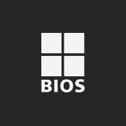

CTC Rosario
2019 - 2023 CompletadoEgresado como Analista Programador. Enfocado en el analisis, planificacion y desarrollo de software. Y con titulo intermedio de Desarrollador Genexus Jr 16.

CoderHouse
2023 - 2024 CompletadoCurso en linea de Desarrollo Front-end aprobado, completando tres cursos diferentes de Desarrollo Web, JavaScript y React JS.

Soy Henry
2023 - 2024 CompletadoBootcamp de Desarrollo Full Stack Web aprobado, realizado a la par que el curso de Desarrollo Front-end.

Brokerware
2024 - 2024 6 mesesPrimer trabajo como Developer Jr a prueba en Brokerware, junto a otros 3 desarrolladores también a prueba, donde aprendí algunas cosas de contaduria y logre afianzar algunos de mis conocimientos en programación.

Intachables.com
2024 - 2025 2 mesesPrimer trabajo como freelancer de una pagina web de mascotas para un cliente, en conjunto con un compañero utilizando Visual Studio Code, TypeScript, ReactJS, ExpressJS, NodeJS, Sequelize, PostgreSQL, Prisma, Tailwind y Render.

Instituto BIOS
2025 - 2026 AbandonadoCurso de Arte y Diseño de Videojuegos. Probe realizar un curso de 2 años relacionado a videojuegos con el fin de convertirme en Game Designer. Pero termine dejandolo para seguír enfocado en mi carrera como Analista Programador.